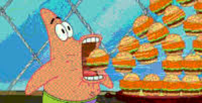

現在跑的是什麼spark-2 上兩個服務同時常駐，前面一個轉發器；以下所有數字都是實測
影片生成時間同一支 8 步、5 秒、1344×768、seed 1 的任務；顏色是階段，游標停在色塊上看細節
設定拉滿要多久同一個 FP8 剪枝 Ref2VA 服務、同一張參考圖，只把步數與長度調到滿；兩筆都是實測
記憶體用量任務期間 spark-2 的機器總用量，每 5 秒取樣；游標移到圖上看是哪個模型、哪個階段
成果展示每個版本用同一支漢堡任務產出的影片；失敗的版本說明失敗在哪
版本選擇思路為什麼最後選了 FP8 剪枝
為什麼不用 BF16 官方未剪枝放不下兩個
- 畫質與速度都最好：每步 74.8 s，是所有版本裡最快的
- 但檔案 62 GB，一個服務閒置就要 34 GB、生成時 91 GB
- 兩份放不下：機器只有 121 GB，開兩個直接爆
- 只想跑單一模型、又要最好畫質時，這仍是首選
為什麼不用 INT8 剪枝SGLang 會出錯
- SGLang 有靜默損壞的已知問題：載入時跳過 Q/K/V 重排，輸出變成平坦畫面加雜音，而且不報錯
- 我們已經踩過同一個機制：Comfy-Org 的 BF16 剪枝檔輸出全灰，是同一段「猜排列」邏輯的反向錯誤
- 檔案大小與 FP8 一樣是 19.5 GB，沒有額外好處
- 美術在 ComfyUI 上能用，是因為 ComfyUI 的載入器沒有這個問題
為什麼不用 NVFP4暖機就 OOM
- 檔案最小，只有 12.9 GB，載入只要 20 秒
- 但第一次運算就爆：35 秒內從 64 GB 衝到 117 GB，被系統殺掉
- 已排除所有變因：剪枝與未剪枝、串流與常駐、容器上限 108 與 116 GB，結果全都一樣
- 原因在框架不在檔案：SGLang 的 FP4 執行路徑在 GB10 上還沒成熟，官方也從沒在這張晶片上驗證過 FP4
為什麼沒用 LoRA 加速推論時報錯
- 本來可以快 6 到 12 倍：正式品質從 50 步縮到 4 或 8 步
- 檔案沒問題：624 個參數載入成功、套用到 208 層
- 第一次運算就崩：SGLang 的 H3 程式直接讀取線性層的量化屬性，但被 LoRA 包住的層沒有這個屬性
- 修法只要兩行，上游有同類修正但還沒套到 H3；這是目前最值得補的一項
結論：FP8 剪枝是唯一同時滿足三個條件的選項 —— 畫面正確、檔案夠小能放兩份、SGLang 在 GB10 上跑得動。代價是每步比 BF16 慢 28%，換到的是兩個模型同時常駐、不必花 3 分鐘重啟切換。

固定條件ref2va · 1344×768 · 5.17 秒 · 8 步 · seed 1
只改變DiT 精度：BF16 官方檔、FP8 與 NVFP4 預量化檔
Text encoderHeretic NVFP4，四組相同，常駐 GPU
機器spark-2 · GB10 · 128 GB 統一記憶體 · SGLang a1b4ec0
Prompt 與參數
2D cartoon animation in the exact style of <Picture 1>. The pink starfish character from <Picture 1> frantically devours a towering pile of hamburgers, grabbing two or three at a time with both hands and cramming them into his huge open mouth in rapid succession. His cheeks bulge, lettuce and crumbs fly everywhere, the burger pile shrinks fast. Static medium shot in front of a chain-link fence under a blue sky, flat colors and bold outlines. Sound: rapid loud chomping and gulping, wrappers rustling, exaggerated cartoon eating noises.
- num_inference_steps 8，即 7 次 DiT 評估
- flow_shift 12、audio_flow_shift 3
- aspect_ratio 16:9、duration_seconds 5.0
- 權重經 NFS 讀取，約 1.9 GB/s
點色點可隱藏／顯示；游標停在任何長條或曲線上看細節
記憶體任務期間 spark-2 實際使用量，每 5 秒一點；線色是階段，虛線是 121 GB 上限
為什麼兩個反直覺的結果，各三句話
NVFP4 為什麼跑不起來
- 載入沒問題：檔案小、20 秒就進 GPU，還剩 86 GB 空間
- 第一次算就爆：FP4 矩陣乘法首次執行時，35 秒內多吃 50 GB，撞到整台機器上限被殺
- 已排除：檔案大小（23 與 13 GB 都一樣）、放置方式（串流與常駐都一樣）、容器上限（108 與 116 GB 都一樣）
- 結論：SGLang 在 GB10 上執行 FP4 的那段程式配置失控，需上游修正，非參數可解
FP8 為什麼比 BF16 慢
- 省的是搬資料：檔案只有 BF16 的三分之一，讀得確實少
- 賠的是運算：GPU 要換用 FP8 專用核心，GB10 上這套核心效率不如 BF16，每步多 20 秒
- 旁證：線上壓縮與預量化兩種 FP8 檔結果一致；冷啟動多 3 分鐘在編譯核心，代表沒有現成最佳化
- 結論：低精度在這台上「算」變慢、「算」會爆，都沒比 BF16 划算；加速要靠減步數或解掉 NFS 重讀
完整數字表
| 版本 | DiT 檔 | 冷啟動 | 文字編碼 | 參考圖 | 去噪 ×7 | 每步 | 解碼 | 全程 | 峰值（API） | 峰值（取樣） | 狀態 |
|---|
先前初測（官方 text encoder）
- BF16：每步 74 s、全程 9:50、峰值 77 GB、冷啟 3:24
- 線上 FP8（
--quantization fp8）：每步 91 s、峰值 13 GB、冷啟 10:19，畫質相當但慢 23%，GB10 的 FP8 核心是瓶頸 - NVFP4（Abiray mixed 22.8 GB，修檔後）：載入正常，暖機第一步去噪記憶體 41→102 GB，OOM 兩次，未完成
- 換 Heretic text encoder：文字編碼 22.9→8.0 s，其餘不變；需
text_encoder=resident
一眼看差異我們的 DGX Spark 服務 vs 美術的 RTX 5090 文件；長條越長越差；記憶體 速度 標示差異影響的面向
DGX Spark（單機）GB10 · 128 GB 統一記憶體 · 頻寬 273 GB/s
SGLang（a1b4ec0）· docker · NFS 權重
vs
美術 ComfyUI x RTX 509032 GB 顯存 ＋ ≥48 GB RAM · 頻寬 1.8 TB/s
ComfyUI v0.35 ＋ H3 Studio 面板 · 本機 NVMe
記憶體DiT 大小
美術使用 INT8 剪枝檔，我們用官方 BF16 未剪枝。模型大小差 3 倍，所以美術每步搬的資料也少 3 倍。
速度去噪每步
GPU 頻寬差 6.6 倍（273 GB/s 對 1.8 TB/s）加上模型差 3 倍。左邊是 768P 實測，右邊是 cookbook 在 480P 量的；同為 768P 時 5090 估約 13–15 s，差距 5 到 6 倍。
速度模型切換
SGLang 換模型＝重啟服務＋暖機；ComfyUI 程序不關，只換 21 GB 權重。
速度LoRA 加速器
SGLang 的 H3 程式碰到 LoRA 包裝層就報錯（缺 quant_method 屬性），上游還沒修；ComfyUI 直接吃 LoRA。
沒有 LoRA 要跑 50 步，有的話 4 到 8 步，去噪時間少 6 到 12 倍；畫質接近原版但不完全相同。
三個主要差距：美術使用的模型小 3 倍、GPU 頻寬快 6 倍、LoRA 讓步數少 6 到 12 倍。
三個常見疑問上面四列差異背後的原因
① 為什麼不比照改用 INT8 剪枝版？
- SGLang 的 INT8 ConvRot 路徑有靜默損壞 bug：載入時跳過 QKV 重排，輸出是平坦低對比畫面加雜音，不報錯（#40127，修正 PR #40158 未合併）。我們的 Comfy-Org 剪枝 BF16 檔全灰，是同一個「猜排列」機制的反向案例，證明這不只是別人檔案的問題。
- 實測 FP8 剪枝：量化在 GB10 上不會更快，每步 95.7 s，比 BF16 的 74.8 s 慢 28%；GB10 的低精度核心效率差
- 量化主要影響記憶體容量，但記憶體容量不是主瓶頸：剪枝與量化只換到畫質下降
結論：
Comfy-Org 的 INT8、剪枝 BF16 在 SGLang 都有問題（FP8 剪枝能跑是因為它的量化設定有明確標記）。#40158 改成讀檔案自己的標記，合併後再評估。
② 為什麼 SGLang 換模型要重啟，ComfyUI 不用？
- SGLang 是「服務」：模型路徑與分割是啟動參數，啟動時建好 pipeline、算好每個元件放哪裡（哪些層常駐、哪些串流），之後所有程序都綁在這份配置上。沒有「卸載／載入另一個模型」的 API
- 暖機也是啟動流程的一部分：跑一支假任務量記憶體峰值來決定放置，所以每次重啟都要重做
- ComfyUI 是「工作流執行器」：模型只是節點載入的物件，放在系統記憶體，要算時搬進顯卡，顯卡不夠就卸掉舊的。換模型就是換一個物件，程序不停、不暖機、不編譜
- 代價：ComfyUI 同一時間只有一個 DiT 在顯卡；SGLang 的放置是算過的，穩定性與速度較可預期
結論：這是設計取向，不是 bug。SGLang 要零切換成本，只能兩個服務同時常駐（需 FP8／INT8），或關暖機把 3 分縮到 1 分多。
③ 「SGLang 的 H3 程式碰到 LoRA 包裝層就報錯」
- 錯誤：
'RowParallelLinearWithLoRA' object has no attribute 'quant_method'。LoRA 檔沒問題，624 個 key 載入、套到 208 層都成功
- 原因：只要給
--lora-path，SGLang 就無條件把所有線性層換成包裝物件；H3 每個區塊前向時直接讀 linear.quant_method，包裝層沒有這個屬性（pipeline.py · minimax_h3.py）
- 三條路都繞不過：合併模式一樣包裝，因為包裝發生在決定合併之前（未另測，程式路徑相同）；換 FP8 或 INT8 一樣包裝，而且量化層連合併資格都沒有；探測沒有旗標可以關掉（lora/linear.py · server_args.py）
- ComfyUI 不經過包裝：載入時把差量直接加進權重，層還是原本的層，所以也不挑精度（model_patcher.py）
- 上游：#40171 對 FLUX.2 同根因已有 getattr 修法，未合併；H3 那段截至 9/21 未改
結論：
SGLang 目前無法在 MiniMax-H3 上運行 LoRA，美術使用 ComfyUI 所以可以使用。這不限於我們的設定，這版上任何人跑 H3 加 LoRA 都會崩。要用只能自己改那兩行 getattr，可 git 還原。
模型規格只標對結果有影響的差異
元件
DGX Spark
RTX 5090
影響
分割
Ref2VA
FL2VA ＋ Ref2VA
差異大我不能純文字或首尾幀生成
DiT
BF16 官方未剪枝 · 61.7 GB
INT8 ConvRot 剪枝 · 21 GB × 2
差異大速度與記憶體的主因；他畫質略降
Text encoder
NVFP4 Heretic（去審查）· 14.7 GB
NVFP4 AWQ Comfy-Org · 15.7 GB
幾乎相同同精度，只差來源
Video VAE
FP16（FP32 檔載入時轉）· 5.2 GB
FP16 · 5.2 GB
相同
Audio VAE
FP32 · 0.56 GB
FP32 · 0.6 GB
相同
加速節點
無
H3-Optimizations：省顯存、稀疏注意力
差異中稀疏注意力再快 1.5–1.9 倍，但改變運算結果
磁碟
264 GB（含量化測試檔）
75.65 GiB
不影響速度
部署與任務切換從使用者到權重
DGX Spark：一個服務、一個模型常駐
瀏覽器／curl→API 30110WebUI 30111→docker minimax-h3SGLang，一條佇列→NFS 權重每步重讀
停服務殺掉進行中任務
重啟＋載入50–90 s
暖機假任務17 s–2 分 20 s
換模型 ≈3 分
RTX 5090：一個 ComfyUI、依工作流換權重
H3 Studio 面板8787→ComfyUI8188，一條佇列→工作流選 DiT→本機 NVMe
卸掉舊 DiT21 GB
讀新 DiT21 GB，5–20 s
換模型 秒級
為什麼差 3 分鐘：SGLang 沒有換模型指令，只能重啟；重啟後還要跑一支假任務把 62 GB 全讀一遍。ComfyUI 不重啟、不暖機、檔案又只有三分之一。解法：關暖機省一半，或兩個 FP8／INT8 服務同時常駐就不用換。
LoRA 外掛同一批 lightx2v Turbo LoRA，用途只有一個：50 步縮成 4 或 8 步
分割
DGX Spark
RTX 5090
FL2VA
—（沒有 FL2VA 權重）
4 步 × 4 檔（v1.0、v1.1、v1.2 聲音改善、SLA 實驗）· 8 步 × 2 檔
Ref2VA
4 步 v0.1 · 8 步 v1.0 推論報錯
4 步 v0.1 · 8 步 v1.0 可用
為什麼他能用我不能：LoRA 檔一樣，載入的程式不一樣。ComfyUI 直接套；SGLang 的 H3 模型在每個區塊探測能否用 MXFP8 時直接讀 linear.quant_method，LoRA 包裝層沒有這個屬性就崩。改成 getattr 兩行即可，上游未修。
查核：NVFP4 與 LoRA 為什麼在 Spark 跑不起來2026-09-21 查 sglang、MiniMax-H3 官方 repo、HF 討論區
NVFP4 DiT暖機第一步 OOM
現象載入正常；第一次 FP4 矩陣乘法 35 秒內 64 → 117 GB 被殺。剪枝、未剪枝、串流、常駐都一樣
外界沒有人回報過。查 sglang 217 筆、MiniMax-H3 官方 6 筆、三個 HF 討論區
原因官方從沒在 GB10 上驗證過 FP4：cookbook 的 DGX Spark 配方只有 BF16（#37456）；NVFP4 矩陣乘法在 SM120 還在換後端（#38170），GB10 是 sm_121 不在清單；社群也回報 NVFP4 檔連 LoRA 都掛不上（lightx2v #24）
判定SGLang 的 FP4 路徑在 GB10 上未成熟。等上游，或我們開第一個 issue
Turbo LoRA前向推論報錯
現象載入成功、套到 208 層；第一次算就報 'RowParallelLinearWithLoRA' has no attribute 'quant_method'
外界同類 bug 正在修，但修的是 FLUX.2（#40171，9/18，未合併）：LoRA 包裝層缺 quant_method，修法是掛完後用 getattr 重新驗證
原因H3 的 MXFP8 探測沒考慮 LoRA 包裝層。上游 main 的 minimax_h3.py 今天確認仍直接讀 linear.quant_method
判定兩行改 getattr 可解，可 git 還原。改 merge 模式或換量化版都繞不過，包裝是無條件發生的；PDD LoRA（#39514）同理
來源：sglang #37456 DGX Spark 配方 · #38170 · #40171 · #39514 · #40127 · lightx2v #24 · 同事 movieeasymake · H3-Optimizations
記憶體四個都是實測的機器總用量，滿格 121 GB；紅色虛線是單一容器的 108 GB 上限
一個服務閒置
46 GB
一個服務生成中
59 GB
兩個服務閒置
89 GB
一生成、一閒置
98 GB
兩個服務同時常駐是安全的：平常 89 GB，有任務在跑時 98 GB，離機器的 121 GB 還有 23 GB。單一容器用量約 25.5 GiB，離 108 GB 上限很遠。
- 閒置那兩條是服務就緒後的靜止讀數，與步數、片長無關
- 生成中那兩條取自 8 步、5 秒、1344×768 的任務；峰值隨解析度與片長變動，不隨步數變動，所以跑 10 秒或更高解析度會比這裡高
- 兩個服務同時生成的情況沒有實測，轉發器的鎖本來就會避免它發生
兩支驗證任務同一段提示詞、8 步、5 秒、1344×768、seed 1；差別只在有沒有給參考圖
Ref2VA · FP8 剪枝 · 參考圖畫面正確
每步95.6 s
全程12:08
解碼35.6 s
峰值29.8 G
與 BF16 版本畫面看不出差異。同一支任務 BF16 是每步 74.8 s、全程 9:40，所以 FP8 慢 28%。
FL2VA · FP8 剪枝 · 純文字畫面正確
每步58.2 s
全程7:25
解碼35.7 s
峰值25.7 G
完全沒有參考圖，角色、漢堡塔、鐵絲網、藍天都是從文字生成。不必編碼參考圖、輸入序列也短，所以每步快 39%。含 32 kHz 音軌。
| 項目 | Ref2VA（左） | FL2VA 純文字（右） |
|---|
| 提示詞 | 同一段，只有兩處指向參考圖的字改寫（見下方） |
| 參考素材 | 一張角色參考圖 | 無 |
| 每步去噪 | 95.6 s | 58.2 s，快 39% |
| 全程 | 12:08 | 7:25 |
| VAE 解碼 | 35.6 s | 35.7 s，相同 |
| 峰值（API） | 29.1 GB | 25.7 GB |
提示詞與兩處改寫
2D cartoon animation in a flat cartoon style. A pink starfish character frantically devours a towering pile of hamburgers, grabbing two or three at a time with both hands and cramming them into his huge open mouth in rapid succession. His cheeks bulge, lettuce and crumbs fly everywhere, the burger pile shrinks fast. Static medium shot in front of a chain-link fence under a blue sky, flat colors and bold outlines. Sound: rapid loud chomping and gulping, wrappers rustling, exaggerated cartoon eating noises.
- 原文是
in the exact style of <Picture 1>，純文字沒有圖可指，改為 in a flat cartoon style - 原文是
The pink starfish character from <Picture 1>，改為 A pink starfish character - 其餘一字未動；步數、seed、解析度、片長全部相同
- 另有一支金色寶石的純文字任務（每步 56.7 s、全程 7:26），數字與這支一致
架構對外只有一個埠，後面兩個服務
你的請求curl · WebUI · 程式
轉發器 · 30100依 task 選模型 · 全域生成鎖 · 記住任務屬於哪邊
task = ref2va
Ref2VA · 30110FP8 剪枝 19.5 GB
參考圖／影片／音訊
task = t2va 或 fl2va
FL2VA · 30120FP8 剪枝 19.5 GB
純文字／首尾幀
為什麼需要轉發器：SGLang 一個服務只能載一個模型，兩個服務各有各的佇列、互不知情。轉發器負責分派，並確保同一時間只有一支任務進 GPU。
怎麼用送到 30100 就好，其餘自動處理
| task 欄位 | 用途 | 需要的素材 | 實際走 |
|---|
ref2va | 參考角色、場景、聲音；換角 | 至少一個 conditions | 30110 |
t2va | 純文字生成影片與聲音 | 不需要 | 30120 |
fl2va | 首尾幀補間 | 首幀、尾幀擇一或兩者 | 30120 |
# 送任務（立刻回號碼牌；排隊在伺服器端，斷線不會取消）
curl.exe -X POST http://:30100/v1/videos \
-H "Content-Type: application/json" -d "@request_t2va_8.json"
# 查狀態與下載（用同一個埠，會自動轉回正確的後端）
curl.exe -s http://:30100/v1/videos/<id>
curl.exe -s -L http://:30100/v1/videos/<id>/content -o out.mp4
# 看轉發器與兩個後端的健康、目前鎖在誰手上
curl.exe -s http://:30100/health
兩件要注意的事：一、不填 task 時轉發器會依內容自己推斷並補上，但明確填寫比較保險。二、30110 與 30120 仍可直接存取，但繞過轉發器就沒有排隊保護，建議一律走 30100。
主機端控制指令
# 兩個服務（在 spark-2 主機以 執行）
bash /minimax_h3/host/h3-up.sh ref2va_fp8 up|down|restart|status
bash /minimax_h3/host/h3-up.sh fl2va_fp8 up|down|restart|status
bash /minimax_h3/host/h3-up.sh ref2va_bf16 restart # 換回 BF16 單模型
# 轉發器
bash /minimax_h3/host/h3-router.sh up|down|restart|status|logs
過程中解決的問題留給下次參考
| 問題 | 原因 | 解法 |
|---|
| FL2VA 要不要下載 135 GB | 官方分割是完整目錄 | 比對後發現兩分割的 transformer 設定完全相同，文字編碼器與 VAE 可共用；只下載 19.5 GB 權重＋兩個設定檔，用符號連結組出 FL2VA 目錄 |
| SGLang 一個服務載不了兩個模型 | 模型是啟動參數 | 開兩個容器、兩組埠；腳本加 MODEL_VARIANT 與 H3_PORT 參數 |
| 兩邊佇列互不知情 | 各自獨立的 scheduler | 前面放轉發器做全域鎖，送出前先查兩邊是否在忙 |
API 回 task is required | H3 必填 task 欄位 | 轉發器在缺少時依內容自動補上 |
| 客戶端逾時後仍產生任務 | 轉發器仍在排隊等待 | 等待迴圈加 is_disconnected() 檢查，斷線就放棄；並加一小時上限 |
| 監看腳本找不到 log | 兩服務的 log 檔名加了分割後綴 | tasks.sh／run_test.sh 改成自動選最新的 log，可用 H3_LOG 覆寫 |
一次看完對外只有一個入口 30100，送什麼、怎麼查、怎麼下載
1
產生請求選好參數，下面依序是素材怎麼給、request.json、送出任務（curl／Python／TypeScript／Go），說明在最後
2
送出後會拿到什麼立刻回一個任務 id（號碼牌）；排隊在伺服器端，斷線或關掉程式都不會取消
# 回應
{ "id": "9326c620-...", "status": "queued", "backend": "ref2va",
"queue_position": 1, "queue_ahead": 0 }
# backend：送去哪個模型。queue_ahead：前面還有幾支
# 詳情（提示詞、參數、素材）用 GET /v1/videos/<id>/detail 查，任何人都看得到
3
查進度排隊中會多回 queue_ahead（前面還有幾支）；實際步數請看 /v1/progress
curl.exe -s http://:30100/v1/videos/<id>
# 完成後會多出這幾個欄位
{ "status": "completed", "inference_time_s": 728.2, "peak_memory_mb": 29752,
"file_path": "/minimax_h3/outputs/<id>.mp4" }
# status 可能是：queued（排隊或生成中）、completed、failed（error 寫原因）、
# stopping（有人刪了它，服務重啟中）、deleted（已被刪除）、lost（伺服器已經沒有這筆）
# 跑到第幾步、還要多久：GET /v1/progress
4
下載成品轉發器會自動轉回產生它的那個後端
curl.exe -s -L http://:30100/v1/videos/<id>/content -o out.mp4
三種 task決定用哪個模型；不填的話轉發器會依內容自己判斷並補上
"task": "ref2va"
→ Ref2VA 服務（埠 30110）
- 要給素材：conditions 至少一項
- 可用 image、video、audio、video_audio
- prompt 裡用
<Picture 1>、<Video 1>、<Audio 1> 指向素材
- 參考圖可放多張，依 conditions 順序編
<Picture 1>、<Picture 2>…；建議 1～2 張，3 張起可能特徵混淆；每步約慢 27%（2 張）、67%（3 張）
- 換角、角色參考、風格參考都走這個
"task": "t2va"
→ FL2VA 服務（埠 30120）
- 不用任何素材，純文字生成畫面與聲音
- 沒有 conditions 欄位
- 比 ref2va 快約 39%，因為不必編碼參考圖
"task": "fl2va"
→ FL2VA 服務（埠 30120）
- 首尾幀補間：給首幀、尾幀，或兩者都給
- 適合銜接兩個已有畫面
- 尚未實測過
所有端點全部走 30100；括號內是實際處理的後端
方法
路徑
用途
POST
/v1/videos
送出任務；可用 multipart 一併附素材
GET
/v1/videos/<id>
查單筆狀態
GET
/v1/videos/<id>/detail
詳情：提示詞、參數、素材（任何人都看得到）
GET
/v1/videos/<id>/content
下載影片
GET
/v1/videos
列出所有任務（兩個後端合併，加上還在排隊的）
GET
/v1/progress
正在跑哪一支、第幾步、還要多久，以及轉發器裡的隊伍
GET
/v1/models
兩個後端載入了什麼
POST
/v1/prompt/optimize
AI 優化提詞（Qwen 27B，依 MiniMax 官方 h3-prompt-writing）；回 SSE 串流，最後一筆 done 的 text 就是改寫好的英文提詞
GET
/health
轉發器與兩個後端的健康、鎖在誰手上
DELETE
/v1/videos/<id>
刪除任務（任何人都能刪）：排隊中直接移除；生成中要加 ?stop=1；已完成的影片移到回收區
刪除生成中的任務會重啟服務。SGLang 沒有中止功能，DELETE /v1/videos/<id>?stop=1 會重啟那個模型的服務來停下 GPU（FL2VA 約 6 分、Ref2VA 約 7.5 分，期間它的其他任務要等）。快跑完的任務建議等它完成；每次刪除都會記下來源 IP。
參數速查常用欄位與限制
| 欄位 | 可用值 | 說明 |
|---|
num_inference_steps | 2 到 100 | 官方預設 50（正式品質），8 步是速度測試；超過 50 沒實測。程式只要求至少 2 步，沒有上限，100 是這份文件建議的上限。時間幾乎與步數成正比 |
target.duration_seconds | 4 到 15 | 5 秒變 10 秒，每步時間約 ×2.3 |
target.short_edge | 768 | 其他值會印警告；畫質未驗證 |
target.aspect_ratio | 21:9、16:9、4:3、1:1、3:4、9:16 | 16:9 是 1344×768 |
seed | 整數 | 同 seed 加同參數可重現 |
flow_shift | 12.0 | 影片；官方預設，不建議改 |
audio_flow_shift | 3.0 | 聲音；官方預設 |
conditions[].uri | 本機路徑 | 要搭配 multipart 附檔（-F "files=@…"），轉發器會用檔名比對後改寫成伺服器位址 |
name | 任意文字，80 字內 | 選填，任務名稱，顯示在生成台「最近的任務」與查詢結果。不填會自動命名為 日期_時間_任務 id（台灣時間），例如 20260924_091850_9326c620-… |
backend | ref2va、fl2va | 選填，強制指定後端，蓋過 task 的自動判斷 |
其他常用指令看進度、控制服務
A
看即時去噪進度直接問轉發器就有真實步數；容器內的工具也還能用
curl.exe -s http://:30100/v1/progress # 正在跑哪一支、第幾步、每步秒數、剩多久；queue 是排隊中的
# 要看更多（記憶體、GPU、log）再進容器：
ssh -p 2201 root@
bash /minimax_h3/tasks.sh # 精度組合、任務清單、進行中的步數與預計完成
bash /minimax_h3/status.sh # 記憶體、GPU、API 健康、最近 log
B
控制服務在 spark-2 主機以 執行
bash /minimax_h3/host/h3-up.sh ref2va_fp8 up|down|restart|status
bash /minimax_h3/host/h3-up.sh fl2va_fp8 up|down|restart|status
bash /minimax_h3/host/h3-router.sh up|down|restart|status|logs
bash /minimax_h3/host/h3-control.sh up|down|status|logs # 讓「刪除生成中的任務」能重啟服務
常見狀況遇到就對照這裡
| 現象 | 原因 | 怎麼辦 |
|---|
回 task is required | 沒填 task，而且內容判斷不出來 | 明確加上 "task" 欄位 |
| 一直是 queued | 前面還有任務，queue_ahead 是前面的支數 | 正常現象，等就好；不要了就 DELETE /v1/videos/<id>（任何人都能刪） |
| 刪除已完成的任務 | 所有人都看不到這支任務與它的詳情 | 影片移到伺服器的 outputs/.trash/，需要找回請洽管理者；每次刪除都會記下來源 IP |
| DELETE 回 409 | 這支已經在 GPU 上生成；SGLang 沒有中止功能 | 加 ?stop=1 會重啟該模型的服務來停止它（冷啟動 FL2VA 約 6 分、Ref2VA 約 7.5 分，期間該模型的其他任務要等）；快跑完的就等它完成 |
| 狀態 failed，error 寫「後端拒收」 | 輪到它時後端才檢查參數，不合規就擋下 | 看 error 裡的原因改參數再送 |
| 回「是本機路徑，但這次沒有附上同名檔案」 | uri 寫了本機路徑卻沒用 multipart 附檔 | 加上 -F "files=@<檔案>"，檔名要與 uri 的檔名一致 |
| 素材上傳了但任務沒送成功 | 後端拒收或請求格式有誤 | 轉發器會立刻刪掉那批素材，不必手動清 |
| 兩個素材變成同一張 | 附檔同名，或中文檔名被換成底線後撞名，後面的蓋掉前面的 | 每個檔案用不同的英文檔名，uri 也跟著改 |
| 回 503「服務重啟中」 | 有人刪了生成中的任務，該模型正在冷啟動 | 等幾分鐘；已完成的影片照樣能查、能下載，排隊中的任務會在服務回來後自動送出 |
30110 與 30120 仍可直接存取，但繞過轉發器就沒有排隊保護，兩邊同時生成會讓記憶體貼近上限且互搶 GPU。建議一律走 30100。